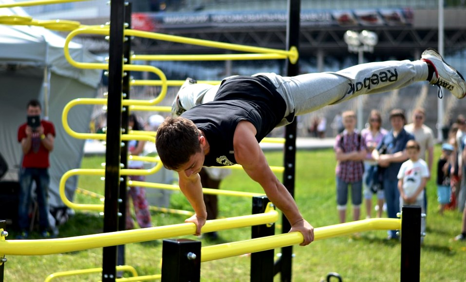

WorkOut
«Воркаут — это не просто занятия на турниках»:

Воркаут — это субкультура, которая продвигает тренировки на уличных спортивных площадках как бесплатную и эффективную альтернативу традиционным фитнес-клубам и тренажёрным залам. Достаточно посмотреть на тех, кто занимается на турниках и брусьях несколько лет, чтобы убедиться: такие тренировки могут дать отличные результаты в плане здоровья, силы и красоты тела.
Многие думают, что на турниках и брусьях можно только подтягиваться, отжиматься и качать пресс. Это не так. Используя воображение, можно придумать огромное количество разнообразных упражнений и их комбинаций, которые не только позволят увеличить нагрузку на тренировке, но и сделают её интереснее. Творческий подход — одна из ключевых черт воркаута.
Идея воркаута выходит далеко за пределы спортивной площадки. Она заключается в трансформации достижений, полученных на турниках, в достижения реальной жизни. Многие люди рассказывали мне, как знакомство с воркаутом изменило их в лучшую сторону, помогло выбраться из тяжёлой жизненной ситуации или решиться серьёзно изменить свою жизнь. Например, переехать в другой город, перейти на новую работу или поступить в престижный университет.
Ещё одна составляющая нашей субкультуры — это социальность, которая выражается в принципе «каждый учит каждого». Мы не зацикливаемся на себе, а, наоборот, стремимся делиться своим опытом со всеми. И делаем это бесплатно. Локальные сообщества на базе уличных площадок с турниками сейчас существуют во многих городах России и в других странах.
У воркаутеров отношение к победам другое. Мы считаем, что единственный, с кем ты по-настоящему соревнуешься, — это ты сам. И каждый день ты должен стремиться стать лучше, чем был вчера. Поэтому я не думаю о том, чтобы превзойти кого-то. Я думаю о том, чтобы стать лучше самому и помочь кому-то тоже стать лучше. Если я узнаю эффективный способ удвоить количество своих подтягиваний за месяц, то с радостью поделюсь им со всеми.
Начать тренироваться — просто.
Я вряд ли ошибусь, если скажу, что на турниках и брусьях могут заниматься люди любого возраста и пола. Многообразие упражнений с собственным весом позволяет подобрать нагрузку под любой уровень и постепенно развиваться. Вряд ли можно придумать что-то более доступное и эффективное.
Несколько лет назад мы запустили сайт WorkOut. Его цель — объединить всех воркаутеров из разных городов и стран и дать им возможность общаться и обмениваться своим опытом. На сайте WorkOut есть огромная база уличных спортивных площадок. В ней можно не только посмотреть, где находятся ближайшие турники, но и узнать, кто на них тренируется. Так вы можете познакомиться с единомышленниками, которые живут рядом.